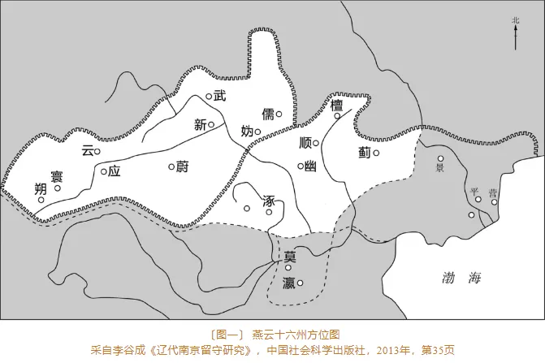
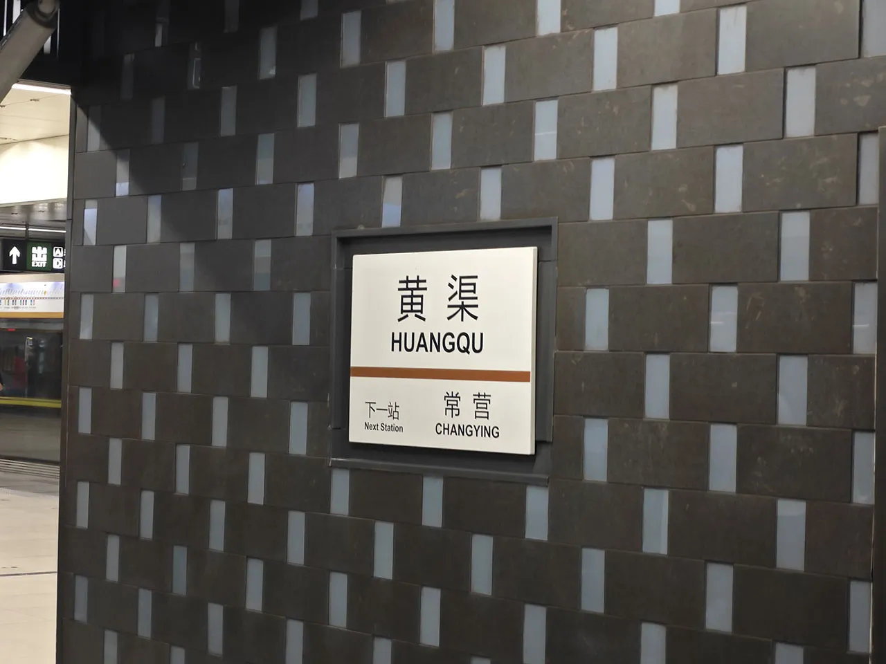
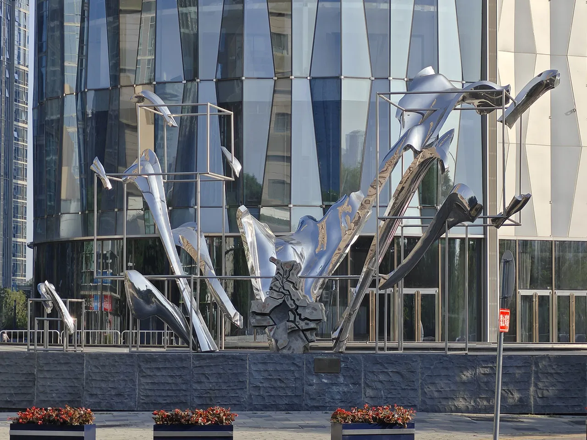
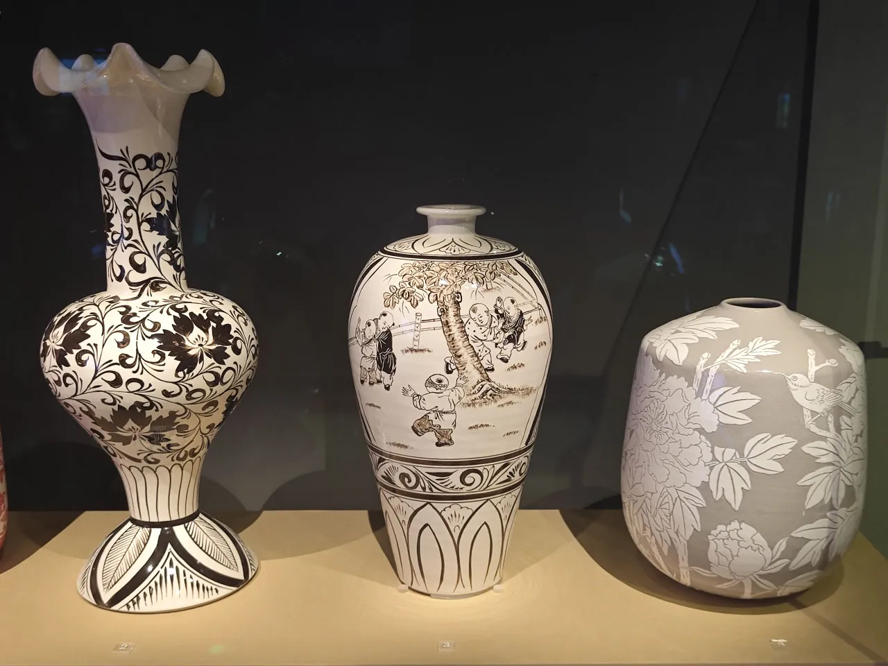
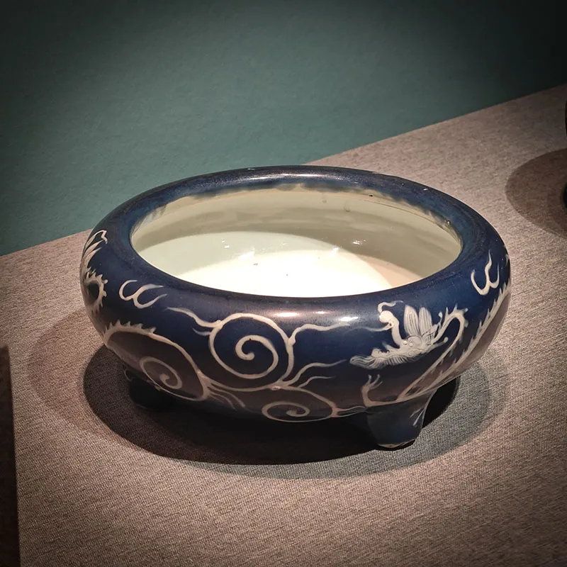
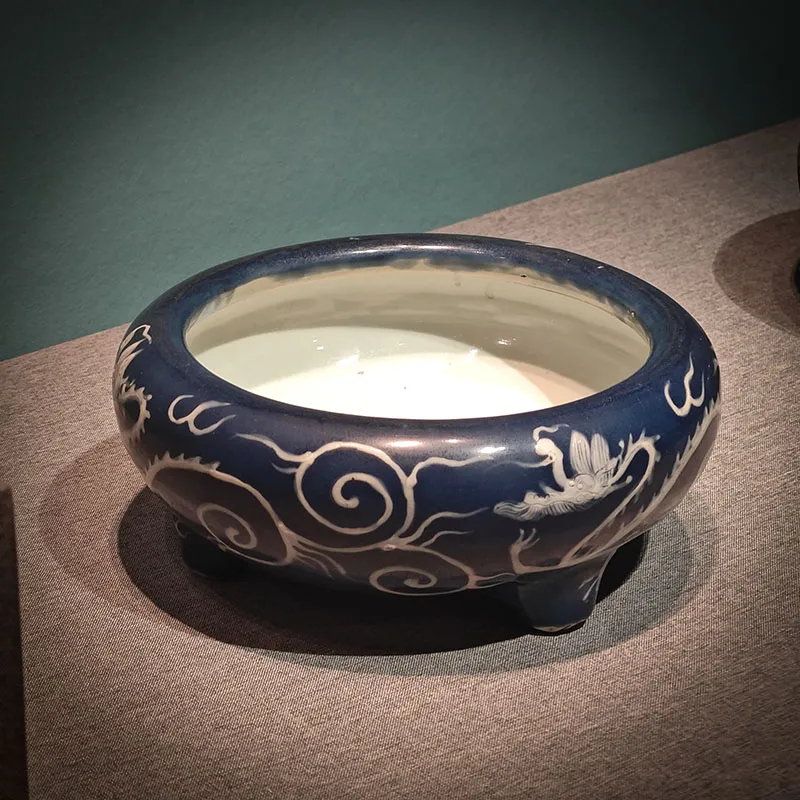
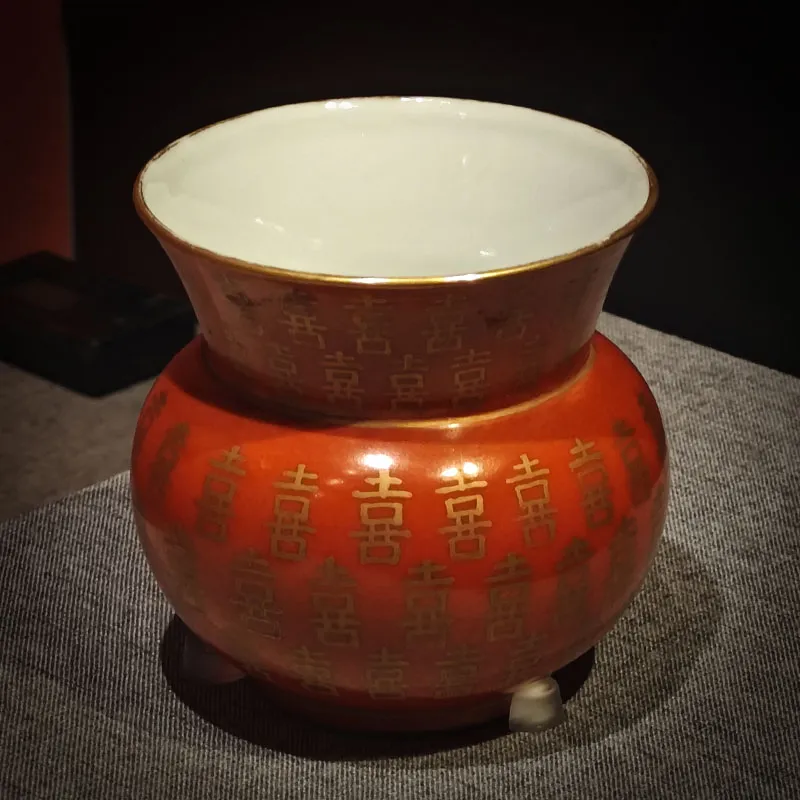
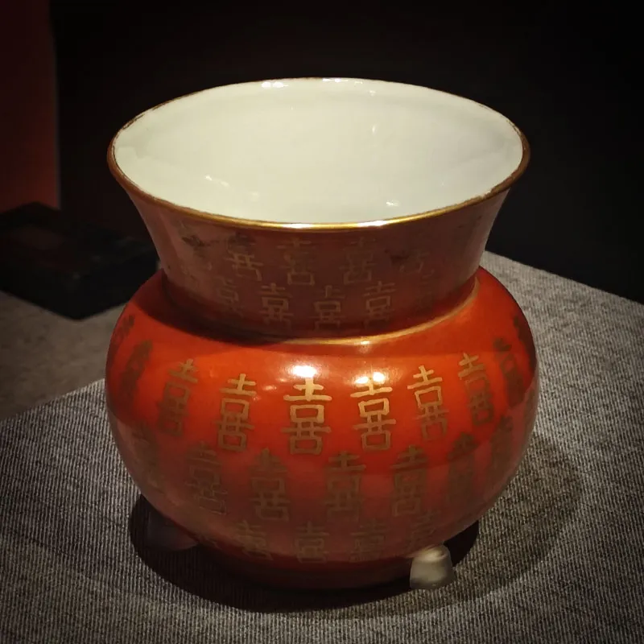

前言

公元 959 年 4 月，后周世宗柴荣亲伐征辽。收复瀛、莫、宁三州，水路都部署赵匡胤先至瓦桥关，辽守将姚内斌举城投降，今雄县、安新县及容城南境入周。
柴荣于瓦桥关置雄州，志在一举北伐收复幽州！
毕业了要好好玩一玩！还可以住外面吹一吹宿舍里没有的空调！
其实这篇博客是一篇卡溜未来之城雄安（雄州）和北京（幽州）通州的流水账😇，上述只是一个连接两城的历史故事而已。
正文
6.7 雄安-亦庄
07:39 G1298
今论文已定，offer 已有，当享受一下最后的自由的日子😭。
面对即将成为社畜的未来，决定去未来之城雄安逛逛！据说距离上次去雄安的这段时间，雄安又盖了点新的东西~
购买车票 G1298 07:48 保定东-08:03 白洋淀，没有候补到二等座😭，只好坐一等座了，￥33。
07:52 真 · 低人一等座
12306 好像出现了点问题，排到了跟一个人同样的车次同样的座位😅。商量了一下，坐到了跟商务座一个车厢的低人一等座！在这里就会看到乘务员问坐在商务座的人要不要吃什么早饭，还有下车提醒的贴心服务，而自己什么都没有！
08:07 京局小零食
最后临到下车还是乘务员给我塞了一包小零食，下车！
08:11 雄安欢迎您
千年大计，未来之城！
一年半没来了，看看雄安有了哪些新变化？
第一感觉：好骑方便的共享电瓶车没了😭！
身为一名三年老保定，却连一个保定的 5A 景区都没有去过，主要原因还是交通太差了😭。白洋淀主景区更是以宰客闻名，查了下雄安新修了一个燕南堤公园可以免费尝尝白洋淀的鲜，于是决定转公交去燕南堤公园！
计划：白洋淀站-215 路-金湖未来城站-走路-雄安国际酒店南门站-雄安旅游 1 线-白洋淀燕南堤站。
215 路上听着口音还是河北老大爷大妈，河北人大夏天不洗澡车里臭臭噢😭。
08:45 候车中
之前查了攻略，雄安旅游 1 线在工作日 60min 一班，双休日和节假日 30min 一班，还是免费的。为了节省等车的时间，特意选了一个节假日跑出来，结果它还是提示我要等四十来分钟的车！
当车快来的时候，才注意了下自己等反车站了，要是坐上了又给你送回白洋淀站咯😭！急忙跑到马路对面坐车，还好另一个方向的车马上也就到了，直接上车！
09:24 雄安旅游 1 线🤩
结果上车的时候又告诉我因为道路施工不会停白洋淀燕南堤站，于是只好一直坐车坐到东边的雄县了😭，就此与保定的 5A 无缘了。
执行 planB，直接坐车坐到雄州牌楼站！
哇哈，雄安修了个看起来就很牛逼的医院！
09:30 大串串
再往下走就出了高速口的大红门，似乎就离开了容东安置区。
09:48 雄安图书馆
哇哈，雄安修了个看起来就很牛逼的图书馆！
09:52 雄安史家胡同小学
哇哈，雄安修了个看起来就很牛逼的小学！
09:54 国企入驻！


盖盖盖！
之前去的地方应该只算是雄安的安置区，这回终于进入了启动区！
周边基本都是建筑工地……但还是有一些大企业已经入驻！
10:07 雄安大学城

盖盖盖！
这四所大学听说好早以前就开始盖了……现在看咋还是平平的建筑工地……
但只要当这四所大学之其一盖好，冀大就将痛失距雄安新区最近的大学的称号之位😭！
10:28 河北雄县
千年雄州
雄安旅游 1 线终点站可达雄安站便于你直接坐高铁跑路。但是来雄安啥也没逛光坐车可太蠢了。于是决定去一下雄县县城中传说中的宋辽边关地道。
抵达雄州！这片区域还未进入雄安新区的开发进程中，因此还是县城的模样。
等公交中，公交车班次真是太少了！等了老半天温泉小镇站-雄安 105 路-天奕商厦站。
11:25 天奕商厦
根据之前去雄安的经验，在雄安是很难找到地方吃饭的🥱，于是早上事先买好了肉夹馍。但是这回到了雄县县城里，还是有些商场的，于是瑞辛咖啡配肉夹馍，中西合璧（这个搭配真难吃）！
看着雄县还是蛮干净的。
11:36 宋辽边关地道🤩
到门口了！
走去地道门口的过程中又被人认成是女孩子了😭，我是一个 178cm 的大长腿美女。
门票￥20。但是检票员好像心不在蔫，估计直接走进去逃票也不会管，但我还是很守规矩地把他叫醒把票买了😇。
进来了！
地上有两个亭子。标记着宋辽边关地道中允许参观的一小段。据说这还是杨家将挖的，砖家给了这一地道一个很好的评价，称之为地下长城😎！
还有一个小小展馆，介绍着雄县的历史，大致讲了雄县曾作为战国燕的国都一段时间，还修了长城，后来又是公孙瓒自焚的地方，再后来就是周世宗设立的雄州，以及后来澶渊之盟后北宋的榷场。
还介绍了雄县人的一大民俗——武术！作为自古以来兵家必争之地，凶巴巴的河北雄县人也是练就了一手好武艺🤧！有国家级非物质文化遗产鹰爪翻子拳😠，省级非物质文化遗产阴阳八盘掌😠、岳氏散手😠等。
11:53 下去了！
宋辽边关地道简介
雄县古称雄州，唐代设瓦桥关于此，北宋时期为边关要塞，是兵家必争之地，宋将杨业之子杨六郎在此镇守三关长达十六年之久，在抗辽保宋的征战中，屡出奇兵，大败辽军，杨六郎在这一望无际的平原地带无险可据，是运用何种军事防御手段出奇制胜呢？直到 1964 年以来在我县境内祁岗、孤庄头、邢村相继因灌溉，取土等活动发现青砖结构洞穴，才揭开这个千古之谜，经专家鉴定，此为宋辽时期用于军事防御的地下通道，史书记载此洞穴西接县城内铃铛阁门前八角琉璃井，向东北接霸州。在进一步地实际勘察中印证，宋辽边关地道西南——东北横跨雄县、霸州、文安、永清等县市境内，东西长 65 公里，南北宽 25 公里，总面积达 1600 余平方公里，分布广、规模大、延伸长、类型多、结构复杂，战争功能齐全。
神秘地道
不知道地道里的砖头是真正的宋朝大砖头还是后面重新修的🤨，我觉得这个地道特别地矮，根本不能快速过兵，感觉更像是个地下仓库。
一大好处是在又干又热的盛夏河北，这个地道里却十分湿润凉爽。兜了一圈出去了。
既然已经到了雄县，就必不可能再回白洋淀站坐车回保定，得去参观一下传说中的亚洲第一大高铁站——雄安站🤩！宋辽边关地道站-雄县 103 路-公交办卡中心。
但是坐完 103 路查了下距最近的公交还得再等快一个小时😵。不等了！我选择爆金币打车直接去雄安站，￥15.74。
12:38 雄安站🤩
司机随便找了个进站口把我扔下走了。作为精心设计的国家未来交通枢纽，有着超多的进展楼梯便于快速进站。
尽管雄安站周围还是一片荒凉，尚待开发，但是有句古话说得好：要致富，先修路😎！
走到站台的过程中除了我以外就只看到了清洁阿姨、安检大姐和保安小哥了😶🌫️。
这里居然还有卖纪念币的地方，买一个￥30！
干净明亮
12:45 空中长廊
美丽空中长廊
雄安站里还有一个仅供参观用的空中长廊，需要安检才能过去。
从长廊外可以看到雄安站还有一大半站台没有开启使用🤔。
当雄忻高铁修好，保定东站就可以直达雄安站！可惜毕业前享受不到了，只能像这天一样从白洋淀站倒腾一阵才能来到这里🫢。
12:58 再逛逛！


据说这更是亚洲最大高铁站
后面计划是去北京南部的亦庄，因此在一个离亦庄较近的高铁站下车。购买车票 C2744 14:37 雄安-15:23 北京大兴，￥54。还有点时间可以再好好参观一下雄安站🤩！
看着有些玻璃和地板已经开始破了，也没有修🤧。
13:11 进站了！
候车室
雄安目前高铁都没怎么修好，只能去北京。因此候车室就只开了一小部分，楼上也都是空的。
千年大计！
看着这个转轮上面显示着 5 年 163 天 13 时 18 分。往前推算一下是 2019 年 12 月 27 日，会是什么含义呢🤔？
为啥我上网查的这个千年轮是从 2017 年 4 月 1 日开始转的……
继续候车中……
14:22 检票了！
一开始还以为直到上车都不会有什么人，后来还是陆陆续续进来了一些，最后还是有些许人的。我猜是京爷这么近，那么美，周末到河北来的。
显德六年（959 年），柴荣发动了对辽国的全面进攻，准备收复赵德钧、石敬瑭时代被契丹人占据的幽燕地区。
柴荣很快就下达了继续进攻的命令，命先锋都指挥使刘重进先发，进占涿州固安县。但是，一件意外改变了历史的走向。正当柴荣准备乘胜进取幽燕的时候，却在瓦桥关突发急病，军事行动不得不暂停下来。
显德六年（959 年）六月，病中的柴荣从雄州出发，南归大梁。令所有人意外的是，六月十九日，柴荣就突然崩逝，终年三十九岁，庙号世宗。
柴荣攻取幽燕的计划就此终止😵，收复幽燕的计划就靠后面的赵光义了！
在一千多年以后的今天，只需要半个多小时就能够从雄州到幽州了！
其实从雄安站进京的时间还没有从保定东站的快……
14:30 上车了！
15:09 大兴机场
大兴机场大致位于北京与雄安中点的位置，历时半个多小时一点到达大兴机场站。
15:18 北京国贸
这还没到南五环，就已经可以看到东边的 CBD 了，说明今天没有雾霾😎！
15:31 北京大兴
从一个不是很大的高铁站下车。我不太明白明明出站过闸机就要刷一次身份证，还要专门再派一个警察手工再检查一遍。
15:35 未来云城
北京大兴也是一个画了饼的“新区”，其实还是有点荒凉的🥱。
还可以看到从大兴机场起飞不久（还是降落？）的肥鸡！
15:45 漫漫长路
从雄安到亦庄，从距离上看是从大兴站下然后再坐公交倒腾到亦庄是最近的，但是时间上可能没有从北京西坐地铁来得快。
但是坐公交还可以欣赏一下风景，基本都是农田就是了🤪，还比地铁来得更便宜，坐了一个多小时￥2。
16:46 平价超市
北京亦庄是全国人均 GDP 最高的地方之一！没去过的会以为这里非常的发达，其实就是工厂比较多所以生产力高……所以进了个超市感觉物价还行，感觉比河北保定还便宜！
16:47 房屋出租
但是在这里租一个房还是相当得贵😵。
17:04 亦庄滨河
本来看着亦庄有无人驾驶的士的服务，就想着在运营区故意留一段距离打车去一下神秘电子厂。结果在 APP 上试了老半天必须过河才可以接单，就只好扫了个共享助力车先过河在打车了😇。
这个助力车也是十分新奇，跟个自行车一样，蹬一下就会有电动加速。感觉是不允许共享电车而存在的妥协产物😇。
17:28 无人驾驶🤩
打了老半天才有无人车接单，无人车又跑了老半天才接到我🙃。
在车门上输入手机尾号就可以上车了！亲身体验 pro 神的毕设课题——基于自动驾驶的开放集目标检测😭！看来 pro 神的研究课题大有作为哟！
之前听说无人驾驶因为安全原因，就会把车开得特别地慢，但其实也还好，最高速能达到 50km/h 以上。
开车一半路对面出现了个试图过马路的老大爷，无人驾驶判断其有在车前横穿马路的可能，于是大幅减速！
车道前面有一个很慢的车。无人驾驶没有提前变道，而是减速在前车后面跟了一段时间后才选择了变道超车。
17:41 我下车了
第一次坐无人车确实很新鲜，而且价格实惠￥5.32。速度上确实要比有司机的车慢🤔。
17:46 神秘工厂
往神秘电子厂周围转了一圈，感觉还是蛮大的，走了。
18:02 高新科技
看样子这个地方挺会搞人工智能的。
18:09 有轨电车
亦庄 T1
之前在武汉看到有轨电车觉得好牛逼！这次来亦庄也想坐坐。定海园西-亦庄 T1-荣昌东街，￥3。不用安检就能坐。
据说这个电车每坐一次，就要补贴￥160，京爷真是有钱没地花😭。然而实际体验却不如地铁，因为有轨电车也要等红绿灯。
这样来了一次亦庄就体验了三种全新的交通工具了！
18:30 前往通州
冀大读研已三载，这回终于决定在北京住一晚上了😪。之前想去通州却因为北京大运河博物馆临时闭馆没有去，这回打算去一下。
但是通州十分地远，在过去跟北京就是两个城市！所以就想着这天先到通州，把该跑的路先赶了，这样第二天就可以轻松一点了😇！
坐公交去通州实在是太慢了，而且下了公交也不能直达民宿，所以只好坐地铁先进北京再坐地铁出去。荣昌东街-亦庄线-宋家庄站-10 号线-呼家楼站-6 号线-通州北关站，￥7。
19:44 地铁黄渠

地狱 10 号线都抢到了座位，结果在去通州的 6 号线一直没有位置，只得一直站过去🤧。
宋东野的一首歌里开头会有一个“黄渠站到了”，是什么含义呢？
20:02 河北通县
最后整了两个小时终于到了😭，我觉得这个时间都够回河北保定了。
即使到了北京的东五环外，繁华依然没有尽头……
20:08 燃灯舍利
抵达民宿，高楼的窗外，便可以看到通州标志性建筑——通州燃灯塔！这代表的是京杭大运河的起点。
复式大房间￥194，好评🥳。洗澡睡觉。
6.8 通州-北京
07:09 运河风情

我起床了！
07:20 三庙一塔🤩
通州城微缩模型
通州古城池地雕
通州自西汉路县以来，直至明清都有城池存在、延续，足证这座城市的古老与传承有序。《通州古城池图》原图绘制于清光绪九年（公元 1883 年），图中的通州依水而建，以北运河、减水河为主的河流围绕在古城四周，成为天然的护城河。古城四周建有城墙，并设有五个城门，每个城门外均建有半圆形的瓮城，其作用是防止敌军对城门的冲击，城内并设有西仓、中仓、东仓、南仓四大粮仓，这也是现在通州城各个街道名字的由来。
是不是古城里的塔总是置于城的边界，以让城外的人标识到城的位置？
07:26 辽式古塔
镇州之宝！
通州燃灯塔
通州燃灯塔，又称燃灯佛舍利塔，位于北京市通州区大城街 1 号，始建于北周年间，唐贞观七年（633 年）重修，清康熙三十七年（1698 年）重建塔身，与临清舍利宝塔、杭州六合塔、扬州文峰塔并称“运河四大名塔” 。
没有想到这个塔要 9:00 才能开放走进参观，这个时间在我的计划之外😭。就只能在栅栏外面看一看了！
北周应该没有实控几年通州，居然就在这里盖起了塔。
07:33 验粮小亭
验粮亭
金代漕粮从河北、山东等地经潞水运至通州，然后把粮食从通州转运至中都城。金代改变了通州作为漕运终点的地位，而成为京大运河北端的漕运转运中心。漕船落岸要先经过验粮，才能过斛卸船。验粮时，由坐粮厅的社人从船上取米样，到大光楼内呈给验粮官看验。现修建此亭，游客观景休憩在此，追忆曾经的漕运繁忙气息。
07:38 验粮大楼
大光楼又名验粮楼，始建于明嘉靖七年（公元 1528 年）。明清两朝时，朝廷户部坐粮厅官员在此验收漕粮因此也称验粮楼。“大光楼”之名源于《周易 · 益卦》“自上下下，其道大光”，意在告诫为官要清正廉洁、国家前途才能宽广。大光楼是北京大运河文化重要节点，古时南方来的大船满载建材、粮食等汇集于此，坐粮厅官员在此查验调度，把南方沿运河运到石坝码头的漕粮装袋，沿葫芦湖转小船运往京城。
清光绪二十六年（公元 1900 年）“庚子之乱”八国联军烧毁大光楼，随着漕粮改由陆路运输，漕运逐渐荒废石坝码头废弃，大光楼也不复存在。
2008 年，北京市水务局建成新北关分洪枢纽工程。在工程设计阶段，考虑到深入挖掘和保护运河文化遗产陴够粹，让“流动的文化”融入到现代水利工程中，将北关新拦河闸生产管理用房仿建成明嘉靖时期大光楼的样式，再现运河源头的历史风貌。目前，大光楼为北关拦河闸的生产管理用房，用来操控调度北关拦河闸，其中设有液压设备、闸门控制、视频监控、信息采集传输等系统。
重建的大光楼不仅是京杭大运河北起点的标志性建筑，也是对运河文化的一个展现和传承。远远望去，拱形的拦河闸、秀美的大光楼，与京门通州的标志性建筑燃灯塔浑然一体，宛若一幅精美的画卷，使古老的运河焕发出青春的活力。
07:44 北关拦河
北关拦河闸
北关拦河闸位于北运河起点处，于 2008 年建成，由 7 孔节制闸加 1 孔船闸构成，是北运河上重要的控制性水工建筑物，也是“通州堰”防洪体系及北关分洪枢纽的重要组成部分，承担着保障北京中心城区、城市副中心以及下游河北与天津部分区域防洪安全、为北运河水生态修复以及通航提供保障等重要功能。
拦河闸上部是工作桥，液压闸门隐于桥下椭圆形桥洞之中。闸体设计时效仿了运河南端苏杭的仿古石桥结构建筑，体现大运河南来北往的文化交融。北关拦河闸是水利设施与历史人文、自然风貌的完美结合，充分体现了现代水利设施的功能属性、景观属性及文化属性。
07:46 千荷泻露
弯弯绕绕
在远处很好看的千荷泻露桥！车在上面走式平的，人在下面走得上上下下的😇。
本来想借此桥顺利通过大运河，结果是个死路。而且死路前还有一堆共享单车，暗示我骑单车返回？真是太会做生意了。
07:56 东方巨龙
东方
巨型城市雕塑《东方》由著名艺术大师韩美林先生设计，2006 年秋天落成。坐落于通州区运河文化广场，总高度 32 米，总重量约 260 吨。雕塑的材质为铸青铜和花岗岩。整座雕塑由一条巨龙和三尊麒麟组成。
运河文化广场似乎还在维护中，不便参观。
09:09 文化中心
北京城市图书馆、北京艺术中心、北京大运河博物馆
之后就是一阵运河尬骑骑到了北京大运河博物馆！期间看到了北京市政府就坐落于此，看着重重警卫就不骑过去凑热闹了🤧。作为北京城市副中心的通州，周围还都是建筑工地在猛猛盖！
如《城市天际线》所说，建造一些伟大工程可以提升周围地价，增加城市吸引力！于是北京城市副中心就先盖了仨大的！
09:25 运河之舟🤩
北京大运河博物馆（首都博物馆东馆），又名运河之舟，位于北京市通州区城市绿心森林公园北侧，是北京城市副中心三大建筑之一，2023 年 12 月 27 日建成启用。首博东馆设计具有收藏保管、开放式展陈、科学研究、社会教育、文保修复的功能。
居然还是一个很新很新的展馆😮。开放时间还跟其他的博物馆不太一样，每日 10:00-20:00 开放，周一闭馆。北京经典 10106 了😅。
即使在北京的六环外，依旧是如此多的人！
北京大运河博物馆开了一个宣传得非常广的一个展《看 · 见殷商》，￥80。里面有一对妇好鸮尊作为镇馆之宝，而我刚好在国博和豫博都见过了，遂不去。
10:04 京师通惠
古人借助通州大运河，就能相对方便地进入繁华的京师了！
拍了照片回去拼图 P 了老半天，技术有限，效果一般，凑合着看吧。
问了下 AI，清朝的闽浙总督人是怎么进京赶考的：
清朝福州举子进京赶考，主流路线以水路为主、陆路为辅，核心依托 “闽江 - 武夷山 - 长江 - 大运河” 通道，全程约 3000 公里，耗时 2-3 个月：
福州→闽江上游：从福州沿闽江逆流至建宁府（今建瓯），约 300 里水路，5-7 天。
闽北→江西：从建宁府经浦城，陆行翻越武夷山（过仙霞关）至江西广信府（今上饶），约 100 里山路，5-10 天。
江西→长江：沿信江入鄱阳湖，再进长江，顺流至扬州，约 800 里水路，10-15 天。
长江→北京：从扬州转入京杭大运河，北上经淮安、济宁、通州至北京，约 1800 里水路，20-30 天。
此路线避开沿海风险，兼顾安全、经济与效率，是当时南方举子北上的首选。
真是太痛苦了😭！
再来看看清朝的直隶总督人是怎么进京赶考的：
清朝保定举子进京赶考，路线简单直接：沿京保驿道（官修大道）北上，经徐水、定兴、涿州、良乡，至北京广安门。全程约 300 里，乘马车 4-6 天，骑马 2-3 天可达，是各省中最便捷的路线。
真是太方便了😎！
10:08 水运初兴
北京大运河博物馆基本陈列有“京华通惠运河永济——北京与大运河历史文化陈列”。
大运河由京杭大运河、隋唐大运河、浙东运河三部分构成，联通海河、黄河、淮河、长江、钱塘江五大水系，跨越 2500 多年、奔流近 3200 公里，是世界上距离最长、规模最大的运河。大运河促进了南北交融、中外交流，维系着国家统一、民族团结。大运河向千年古都源源不断输送养分，推动北京从北疆重镇迈向国家首都，塑造了北京城市文化的集大成性，首善之区多元荟萃成果又藉由大运河反哺全国，日益巩固北京作为大国首都的地位。
大运河向千年古都源源不断输送养分千年古都源源不断借助大运河吸血，京爷吉祥😭！
春秋战国时期，社会生产力获得迅速发展。各诸侯国为富国、强兵、争霸等需要，掀起了第一次开凿运河热潮。
大运河早期的发展历史还是以故事叙述为主（也可能是因为这是“北京”大运河博物馆，这个时候的运河跟北京没啥关系）。开凿运河这一概念在春秋战国便有之。
秦代灵渠和汉代漕渠，构建了以都城长安（今陕西西安）为核心，贯通全国的水上运输体系。
京爷吉祥😭！秦汉开凿的运河方便了首都长安与其他地方的运输。
三国时期，曹魏的运河建设最多。东晋与南北朝时，江南水运大致按照孙吴时的规模发展。兼有灌溉之利的运道，虽然因政权割据而分散，但为隋唐大运河体系的形成奠定了基础。
京爷吉祥😭！曹魏开凿的大运河方便了首都邺城与其他地方的运输。
挖挖挖！
曹操第一次完成了北方水系的贯通！
10:15 运贯南北
挖通了！
老暴君杨广大帝为了便于指挥凶巴巴的河北人征讨高句丽😠，和自己去江南享乐😍，开凿了贯通涿郡-洛阳-扬州-余杭的隋代大运河！
隋朝以后，大运河相关的文物开始多了！

开皇大业！
隋唐时期是少数民族内迁的重要时期，大量少数民族入居幽州，使幽州成为民族融合的大熔炉。此外还有零散的域外人口定居幽州。大运河通达幽州，多元文化在此汇聚融合，又向四方辐射。
借助大运河和其他因素的优势，北京取代了之前被毁的邺城，成为了华北平原新任的老大哥！
这个民族融合的大熔炉可不一定是好事，安禄山史思明就是胡人出身来着，带领凶巴巴的河北人干碎了盛唐🫣。
隋唐五代系列
10:19 辽金建都
辽金与两宋时期，幽州地区从北方军事重镇向王朝都城迈进。政治中心的变化，使漕运方向和路线发生重大改变，运河随之分为南北两个系统。金代海陵王迁都燕京后，为保障都城的粮食供应，疏浚水道积极探索和开发中都漕渠，虽然收效有限，但为元代大运河建设积累了经验。
辽金系列
绿釉龙纹与磁州窑。

完颜铜坐龙
“坐龙”一词出现于宋金时期文献中，后演变为“蹲龙”，是踞坐状龙“坐龙”的统称。这件铜坐龙昂首闭口，前腿直立，弓身踞坐，双股尾上翘。龙体各部位浑然一体、构思巧妙。关于铜坐龙的具体功用，有车辇装饰物、帐顶装饰物、建筑构件等多种学术观点。目前发现的金代铜坐龙出土地点均为金代都城、皇陵或皇家行宫，应为具有皇家性质的专属类器物。
看着造型没有史思明的锋利🤔。
10:27 大都既定
挖挖挖！
元代定都大都，统一王朝的政治中心由长安、洛阳迁移至北京，进而导致大运河路线的变化。曾经东西走向的大运河自今山东临清以南，不再沿御河偏向西南以洛阳为中心，而是径直向南利用汶水、泗水，开凿济州河和会通河，实现“裁弯取直”，大大缩短了江南漕粮河运的距离，在全国范围内形成以大运河为主干的水上交通网，创造了大运河的辉煌历史。
北京首次成为大一统政权的首都！北京爷就此登上历史舞台😎！而西京爷和东都爷已经退出历史舞台很久了😭！于是忽必烈决定让大运河截弯取直！
元大都遗址系列
很多地区的博物馆都见不到什么元朝的器物（估计是遭到了不少的破坏😭），而在北京还是能看到很多元代的东西😎。
船底下的海是用塑料纸做的！
10:39 通惠京华
明代京杭大运河沿线设有近60处驿站，清承明制、期间或兴或废。相邻站里程以 60 里至 70 里为常。站多兼有水路、陆路双重功能、组织管理严密，在国家信息流通与公务往来中发挥了重要作用。
明清系列
元以后的瓷器质量就已经非常高了。
藩属国与外国的使节、传教士、行旅者，沿京杭大运河航行，留下关于大运河见闻的记录，见证了大运河在中国与世界交往中发挥的联通作用。
10:48 漕运转型
自清末停漕以来，政府对于运河的治理日渐废弛，河道迅速衰败。此时的中国，政局动荡、战火频仍尽管各界运用新型技术治水的理念层出不穷，治理方案也几经尝试，但实际效果始终不尽如人意。另一方面，伴随着近代城市化发展，有识之士开始着眼于从“水环境与地域文化”的角度探索北京河渠水道的综合治理和利用方式，运河水系在功能上呈现出从“官用”到“民用”的发展趋向。
清末铁路的问世，大运河的作用下降了！
修修修！
10:52 域河共生

大运河流经省份
接下来介绍的是当代大运河流经省份的特色器物。作为一名老保定，当然是重点关注京津冀了😎。

天津泥人张
梦娃醒，太阳笑，中国梦，多美妙。国是家、善作魂、勤为本、俭养德、诚立身、孝当先、和为贵。百年梦，时代潮，齐努力，同奔跑。共祝愿，祖国好。合美、吉祥、节节高。
通州骨雕、北京绢花
悠悠运河是沿岸人民回家的路，当托着共同的乡情。
巍巍帆档是联通古今的使者，飘动着共同的记忆。
绵绵河水是承载千年历史的文脉，滋养着共同的精神家园。
千言万语，道不尽北京与大运河的辉煌不朽。
万水千山，隔不断北京与运河沿岸的血脉情谊。
新时代的北京与大运河同谱新篇，奔向未来！
11:10 沧海撷珠

瓷铜玉
有关大运河的部分结束了！为了增加大运河博物馆和北京城市副中心的高级感，牛逼的京爷又从北京市文物交流中心从放了点高质量文物进去😎！
11:14 五光十色
颜色釉瓷是指主要以釉的质地和呈色作为装饰的瓷器，其烧造历史可上溯至夏、商之际的原始瓷。其后随着时代的发展，釉色品种层出不穷，至明、清时期，逐渐形成以青、红、黄、白、黑五大色种为主的颜色釉瓷体系。而此“五色”亦是自春秋以来，
中国人对于色彩的基本认识与概括，通常视之为正色，为基本之色，并以象征手段加以比附，使之与“五行”“五方”“四时”相合，赋予其更深层次的文化内涵和寓意，深刻影响着中华民族的审美心理。
本展览从故宫博物院藏品中遴选出 112 件中国古代颜色釉瓷器精品，将十种釉色按五大色釉体系分为五个单元，力求较全面地反映中国古代颜色釉瓷的神韵风骨和陶瓷匠人的智慧匠心。
五光徘徊，而十色陆离，愿您通过此次故宫物院藏古代颜色釉瓷器展，可以领略中华文明源远流长、博大精深的精神标识与中华美学天人合一、中正平和的审美风范。
有关大运河的部分结束了！为了增加大运河博物馆和北京城市副中心的高级感，牛逼的京爷又从故宫从放了点高质量文物进去😎！
雨过天青
柳塘新绿
 

春来江水
 

日出花卉
云霞雕色
秋叶金菊
褐韵沉香
月落蒹葭
长夜浓墨
11:28 准备进京
此船造型取自明代郑若曾《筹海图编》。
元代至明初，漕粮海运主要使用遮洋船，高大如楼，可容百人乘坐。船底尖如刀，利于破浪。甲板宽大，船艏高昂利于托浪。船艉楼设有三层：最下一层底部用石头压舱，上面放置重货，增加稳定性；第二层主要用于存放货物；最上层用于船员住宿和放置较轻的船货。船上设有三桅三帆。
遮洋船船艏上部绘制“狴犴”图案，狴犴是神话传说中一种主持正义、消灾解难的民间守护神。船艏托浪板下绘制“大海托日”，寓意乘风破浪、勇往直前。船头两侧有“龙目”装饰，寓意船只能辨别方向。船艉两侧有“鳅鱼极”象征托起船只永不沉没。船艉部设有鹰板，绘制鹢鸟图案，寓意无惧风暴、能过急流、震慑水神，是船员的海上守护神。鹰板下面有船名牌、八仙牌、船腰带、和合二仙图案等有美好寓意的民俗装饰。船艉楼设置妈祖神像。
这么大的船还是朱炳仁 · 铜，太有钱啦！
因为必须进京才能坐车回河北保定🤔，在通州挤地铁体验舒适不好，遂选择市域列车 S112：11:59 乔庄东-12:35 北京，￥6。必须控制好时间离开博物馆前往火车站！我选择共享单车，在路上看到通州也有无人驾驶试验车😇。
京通号，启动！
12:20 北京东站
好有年代气息的感觉。喃觉得这肯定不如喃们保定的保定东站😎！
12:37 老北京站
老北京火车站
第一次从北京站下车。这个火车站本身就是一个文物！
在旁边的兰州拉面店吃了午饭，看着有点贵，但是明码标价，干净卫生，￥26。
13:20 北京外城🤩

北京城门之东便门

老北京明城墙
穿过一个神秘小胡同绕到北京外城外，看一看老北京的城墙！
有点热😵，狂喝水。
13:45 前往前门
最后一站——北京市中心！崇文门-2 号线-前门。
14:04 建筑工地
为了迎接不久的阅兵仪式，京爷决定将天安门周围的建筑都翻新一下！
14:06 中铁道馆
这三年坐了那么多次的火车，遂决定来参观下中国铁道博物馆！
这也是个国家一级博物馆，but 里面的东西基本是以叙述故事为主。
各色火车
京奉铁路正阳门东车站旧址
15:18 天安丽日
想着都到了前门，不如就再看看天安门广场吧。却没想到看着很近，但是要走安检通道就得绕好大一圈😵。怕赶不上回去的车就只好快速掠过了。
进天安门广场的过程中被查了四次身份证，翻了两次包😵。
之前都没有好好看一看人民英雄纪念碑上都记录着哪些历史事件，好好看一看🫡！
“三年以来，在人民解放战争和人民革命中牺牲的人民英雄们永垂不朽！
三十年以来，在人民解放战争和人民革命中牺牲的人民英雄们永垂不朽！
由此上溯到一千八百四十年，从那时起，为了反对内外敌人，争取民族独立和人民自由幸福，在历次斗争中牺牲的人民英雄们永垂不朽！”

限定 · 天安门
对于从大老远来北京天安门广场看到维修中的天安门城楼的人来说，这可能是个遗憾。对于看过好几次天安门城楼的老保定来说，居然被我看到限定版天安门了😍！
15:31 我跑路了
之前坐了太多的火车，给 12306 爆了太多金币🫠，攒的积分都够直接兑换回学校的车票了！只要看到车次上有”兑“就可以换了！G661：16:15 北京西-16:56 保定东，-7000 积分。
古有赵光义在北京战败狼狈跑回河北保定，今有我在北京怕赶不上车狼狈跑去北京西站。
坐一站就撤！
16:59 京畿之门
京爷水利和交通这么厉害，不考虑改善一下京畿之门喷屎的下水道和等老半天才来的公交车？
17:12 高考结束了！
回学校的路上，马路被高考结束的学生及他们的家长堵得水泄不通。祝他们高考之后通向更美好的未来！也祝要毕业的我们通向更美好的未来！